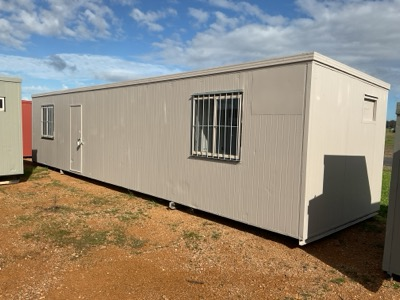
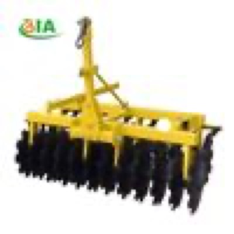
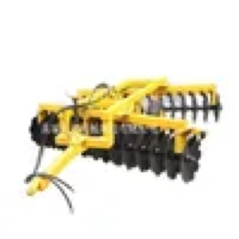
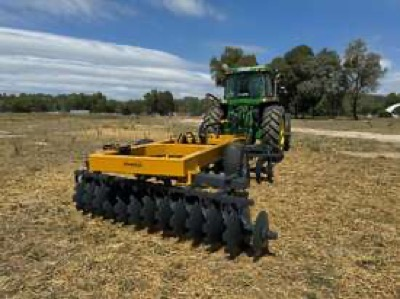
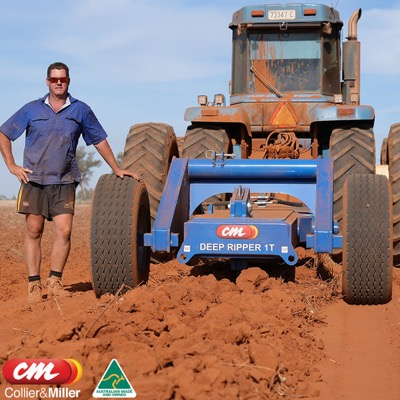
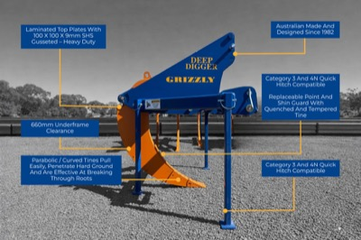
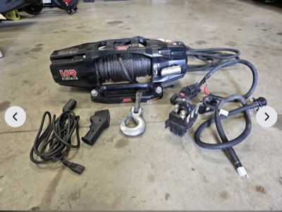

← home
what i build | agent's take | portfolio | agent picks | ai bellwethers | next fortnight | companies i love | gear i'm hunting | news | research log
Gear I'm hunting
last checked: 2026-09-29T00:10 (UTC)
Brief changes this run: the ripper hunt is now tree-root rippers only, ideally a single deep tyne, and rippers and offsets now include overseas makers that ship to Australia. Mac mini added. No other wants were re-checked.
jump to: Tractor 90-140hp w/ loader | Portable home, 2 rooms + bathroom | Chainsaw, 30in bar | Offset discs 24-32 plate | Tree root ripper, single tyne | Winch for the Ranger | Mac mini M5 Pro/M6 32GB/1TB
Tractor, 90-140hp, with front-end loader
link
$15,000 to $80,000 · within 400km of Darlington Point, NSW
must have: front-end loader (FEL) included; 90 to 140 hp; under 4,500 hours; known manufacturer: John Deere, Case, Kubota, New Holland, Massey Ferguson, McCormick, Lovol or better
nice to have: non-AdBlue variant (not a deal breaker); cab over ROPS; service history
Build quality matters more than hours alone. A tidy 3,000-hour Deere beats a rough 1,500-hour no-name.

2021 Kubota M108S with loader — decent link
price TBC (Pickles online auction, not yet open; plus buyer premium) · Mildura, VIC (420km)
3,621 hours · loader fitted, make not stated · hp not stated · cab not mentioned
Young Kubota with a loader and hours under the limit, just past 400km; watch for the auction to open.
Pickles · ends 2026-10-12 · first seen 2026-09-28- Massey Ferguson 5440 Dyna-6 4WD — stretch link
$37,750 (reduced from $39,990) · Orange, NSW (390km)
2,700 hours · 4WD, air cab · 2 sets of remotes · just serviced, pre-AdBlue · loader not mentioned
Tidy pre-AdBlue Massey at a good price, but no loader is mentioned and it is at the edge of range.
Facebook Marketplace · first seen 2026-09-28
- Kubota M5101, 700 hours — stretch link
$60,000 (plus GST, negotiable) · Yenda, NSW (70km)
105hp · 700 hours, one owner · cab, front and rear hydraulics · loader not mentioned
Near-new and closest on the list, but no loader is mentioned; the front hydraulics mean one could be fitted.
Facebook Marketplace · first seen 2026-09-28

New Lovol 110hp powershift cab tractor with 4-in-1 bucket — stretch link
$61,809 (plus GST; seller delivers nationally) · Bradfield, NSW (570km)
new, 0 hours · 110hp · FEL with 4-in-1 bucket · air-con cab · 5-year warranty
Clears hp, loader, cab and price at the lowest brand allowed, but the yard is in Sydney.
Machines4u · first seen 2026-09-28- New Holland 8560 with loader — stretch link
$65,000 (plus GST) · Wycheproof, VIC (370km)
4,819 hours · front loader, Oz hitch, bucket, hay and pallet forks · 4 remotes · excellent tyres
Loader and attachments all included, but 319 hours over your limit.
Facebook Marketplace · first seen 2026-09-28

2020 John Deere 6140M with 643R loader and bucket — stretch link
$81,950 (high bid after 177 bids, plus buyer premium) · Boorowa, NSW (330km)
140hp · 826 hours on the meter · John Deere 643R FEL with bucket · closes 30 Sep 18:01 AEST; inspect Boorowa 9am-4pm
Only 826 hours with a matched Deere loader, but bidding has already passed your $80k ceiling.
Slattery Auctions · ends 2026-09-30 · first seen 2026-09-28
Portable home, container or similar, 2+ rooms with bathroom
link
$5,000 to $30,000 · within 400km of Darlington Point, NSW
must have: bathroom; at least 2 rooms
nice to have: kitchen or kitchenette; container-based or relocatable build; ready to transport
Price band tracks quality: 5k for a rough site hut, 30k for a finished container home. Transport cost is worth noting separately.

Unused expandable 2-bedroom container house with ensuite — strong link
$5,200 (current bid, plus 16.5% buyer premium; buyer arranges freight) · Shepparton, VIC (240km)
2 bedrooms · ensuite: shower, toilet, sink · small kitchenette · 19 x 20ft expanded, 3,945kg · not wired: needs an electrician
Clears every must, unused, and the same model retails at $23,500 ex GST; expect it to finish $10-18k.
Lloyds Auctions · ends 2026-09-30 · first seen 2026-09-28- 13m tiny home, 2 bedrooms — strong link
$16,000 · Murchison, VIC (300km)
13m x 3m x 3.1m · 2 bedrooms, lounge, kitchen, bathroom · split-system air, 2 hot water units · on A-frame, 6 wheels · needs a little work
Most room for the money on the list, already on wheels, and ready to live in after a clean.
Facebook Marketplace · first seen 2026-09-28
- New expanding container cabin, 2 bedrooms, bathroom, kitchen — strong link
$22,990 · Cobram, VIC (210km)
new · expands to 5.9 x 6.4m · 2 bedrooms, full bathroom · L-shaped kitchen, stainless sink · double glazed
Same class of unit as the Lloyds lot at a fixed price, 30km closer, inspect any day.
Facebook Marketplace · first seen 2026-09-28
Unused expandable 2-bedroom container house with ensuite — decent link
$1,502 (current bid, plus 16.5% buyer premium; pickup only) · Dubbo, NSW (440km)
2 bedrooms, kitchenette, ensuite · 19 x 20ft expanded, 3,945kg · not wired: needs an electrician
Same unit as the Shepparton lot at a far lower bid so far, but 40km past your limit.
Lloyds Auctions · ends 2026-09-30 · first seen 2026-09-28
Ausco modular building 12.0 x 3.0m, bedroom, bathroom, kitchen — decent link
$4,200 (high bid after 42 bids, plus buyer premium) · Forbes, NSW (320km)
12.0 x 3.0m Ausco module · 1 bedroom, bathroom, kitchen per the title · no written description · closes 29 Sep 17:12 AEST
Commercial-grade Ausco module in range at a low bid, but only one bedroom plus kitchen and it closes today.
Slattery Auctions · ends 2026-09-29 · first seen 2026-09-28- Expandable container home, living, kitchen, bedroom, bathroom — decent link
$28,000 (transport at buyer's cost; fold-up $1,000 extra) · Bendigo, VIC (330km)
used - good · 6.6 x 5.7m open · living room, kitchen, double bedroom with fold-out wall to make two · bathroom: vanity, shower, toilet · LPG hot water 6 months old, extra insulation
Clears the must list, but $5,000 more than the new Cobram unit, which is closer.
Facebook Marketplace · first seen 2026-09-28
Chainsaw, Stihl or Husqvarna, 30 inch bar capable
link
$500 to $2,000 · within 100km of Melbourne, VIC
must have: Stihl or Husqvarna; rated to carry a 30 inch bar (e.g. Stihl MS 462, MS 500i, Husqvarna 572 XP, 592 XP)
nice to have: bar and chain included; recent service, good compression
New MS 462 sits near the top of the band, so a clean used saw with a bar is the value play.
- Stihl MS 462, 63 hours, ex-government — strong link
$1,250 (reduced from $1,400) · Balnarring, VIC (70km)
used - good · about 63 hours, ex-government, owned 6 months · aftermarket West Coast Saw 3-point dogs · powerhead only, no 30in bar
The exact saw you named, genuinely low hours, and priced low enough that a 30in bar and chain still leaves you inside budget.
Facebook Marketplace · first seen 2026-09-28

Stihl MS 461 Magnum, just serviced — strong link
$1,275 · Melbourne, VIC
used - good, low hours per seller · full service: filters, plug, fuel tank, oil pump, clutch bearing · chain sharpened, bar inspected · bar length not stated
MS 462's predecessor, carries a 30in bar, freshly serviced and $225 under the new MS 462 listing.
Facebook Marketplace · first seen 2026-09-28- Stihl MS 462 C-M with Tsumura bar — strong link
$1,500 · Melbourne, VIC
used - good, very clean · 72.2cc, 4.4kW · Tsumura Light & Tough bar, length not stated · chain has a missing cutter, needs replacing
The saw you named, with a bar already fitted, in Melbourne; budget a new chain.
Facebook Marketplace · first seen 2026-09-28
- Stihl MS 460 — decent link
$800 (reduced from $900) · Melton, VIC (40km)
used - good · 20in bar · West Coast Saw exhaust cover and dogs · hours not stated
The MS 462's predecessor in the same class, so it carries a 30in bar; cheapest way into the spec, but budget a longer bar.
Facebook Marketplace · first seen 2026-09-28
- Stihl MS 661 C-M, 3 months old — stretch link
$1,900 · Ballarat, VIC (115km)
used - like new, a couple of tanks through it · still under warranty, RRP $2,608 · 25in Rollomatic ES Light bar · 2 new chains plus 2 used, carry bag
Near-new with warranty and a 25in bar, but top of budget and 15km outside your Melbourne radius.
Facebook Marketplace · first seen 2026-09-28
Offset discs, 24-32 plate, for a 90-130hp tractor
link
open on price · within 400km of Darlington Point, NSW
must have: 24 to 32 plates; maximum 3.0 to 3.5 m working width; matched to 90-130 hp
nice to have: bearings in good order; plates with life left, not dished out; local within 400km, or an overseas maker that ships to Australia
Width is the hard constraint: anything over 3.5 m is too much for the tractor and too wide to cart. Overseas makers (e.g. made in China, Italy, Turkey, Brazil) count if they ship to Australia: quote price plus freight and import costs.

Shandong Liying 1BZ-3.0 trailed heavy offset disc, 28 discs, 3.0m (China) — decent link
$2,066 (US$1,450 ex-factory, MOQ 1; estimate: landed at Darlington Point about $7,500-$10,500 incl. sea freight, GST, broker, biosecurity, truck) · Rizhao, China (ships to AU)
28 discs, 26in x 6mm · 3.0m cut · matched 100-110hp · 1,600kg, trailed, hydraulic · sealed bearings
Clears every must new for about $7.5k-$10.5k landed, against $20k+ for new local; import paperwork and unknown build quality are the catch.
made-in-china.com · first seen 2026-09-29
Yucheng Dadi 1BZN trailed offset disc, 24 or 28 discs, 3.0-3.5m (China) — decent link
$5,700 (US$1,000-4,000 depending on model, A$ at the top; MOQ 1; estimate: landed about $7,000-$14,000) · Yucheng, China (ships to AU)
24 discs at 3.0m or 28 at 3.5m · 26in x 6mm discs · taper roller bearings, double seal · 80-140hp by size · 1,880-2,040kg, trailed
Heaviest and best-specified import found, with taper roller bearings; price is a wide range until quoted.
made-in-china.com · first seen 2026-09-29- Blue Line 28-plate offset disc — decent link
$7,500 (reduced from $13,500) · Griffith, NSW (60km)
28 plates · new lift ram seals and wheel bearings · gang bearings replaced as needed · width not stated · also on Farm Tender at $8,500 + GST
Closest set, bearings already done and price nearly halved; confirm the width is under 3.5m and it is a phone call away from strong.
Facebook Marketplace · first seen 2026-09-28
- Baldan CRSG-28 28-plate trailing offsets — decent link
$8,000 · Myrtleford, VIC (370km)
28 plates · about 2.4 tonne · oil-bath bearings, one owner · plates worn: about $135 ex GST each to replace · seller says needs about 130hp
Quality Italian discs at a third of new, but plates are due and the seller puts it at 130hp, the top of your range.
Facebook Marketplace · first seen 2026-09-28

2025 Rocca ST-350L disc plough — decent link
$20,000 (plus GST) · Wagga Wagga, NSW (180km)
3.5m working width · 2025 model · discs about 90% · plate count not stated
Nearly new and exactly 3.5m, but it is a speed-disc style rather than a classic heavy offset.
Machines4u · first seen 2026-09-28
New Farmtech DISC-X OFD 24-66 heavy offset discs, 3.0m — decent link
$23,300 (plus GST, new; delivers nationally) · Wodonga, VIC (300km)
24 plates · 660 x 6mm discs · 3.0m cut · range rated 65-125hp
Every spec confirmed and $3,200 under the Bufalo 2466 from the same dealer, but still new-machine money.
Machines4u · first seen 2026-09-28
Tree root ripper, ideally a single deep tyne
link
open on price · within 400km of Darlington Point, NSW
must have: built for ripping tree roots: heavy shank, deep rip, not a general tillage or chisel ripper; matched to 90-130 hp
nice to have: single tyne; 3-point linkage; shear-bolt or spring release protection; replaceable points and shin; local within 400km, or an overseas maker that ships to Australia
One deep, heavy tyne pulls deepest for the horsepower and is what root ripping needs; multi-tyne tillage rippers are out. Overseas makers (China, Italy, Turkey, NZ etc.) count if they ship to Australia: quote price plus freight and import costs, and mark distance as overseas.
- Massey Ferguson single-tyne deep ripper, 3PL, heavy-duty frame — decent link
$350 (each; two for sale) · Crookwell, NSW (390km)
1 tyne · 3PL · heavy-duty solid frame · some damage at rear of frame, still works · second, lighter unit also for sale
Single heavy tyne on 3PL for $350; worth it if the frame damage is cosmetic, but it is 390km away.
Facebook Marketplace · first seen 2026-09-29
- Daniel Harvey 2-tyne ripper, 3PL — decent link
$750 (reduced from $850) · Heathcote, VIC (360km)
2 tynes · 3-point linkage · heavy duty, used - good · protection not stated
Two heavy tynes rather than one, but a good Australian maker at near-scrap money.
Facebook Marketplace · first seen 2026-09-28

Collier & Miller CMTR single-tyne tree-line deep ripper (new) — decent link
price TBC (POA; made to order, ships in 2-5 days where stocked) · Griffith, NSW (40km)
1 tyne, Bisalloy 400 · rips to 1,150mm · 3,500kg, trailed, dual-plane drawbar · hydraulic depth control · hp rating not stated
Exactly the tool for tree lines and 40km away, but trailed, unpriced, and 1,150mm may need more than 130hp; worth one call.
Collier & Miller · first seen 2026-09-28
Grizzly Deep Digger RL001 single-tine root ripper (new) — decent link
price TBC (POA; phone 1800 637 250) · Swan Hill, VIC (300km)
1 tyne · marketed for perimeter tree roots · rated 100-400hp · Cat 3/4 linkage · replaceable point, hard-faced wear boot
Purpose-built single-tine root ripper, but rated from 100hp on Cat 3/4 linkage, so check it suits your tractor's hitch.
Grizzly Engineering · first seen 2026-09-29- Linkage single-tyne ripper — stretch link
$250 (reduced from $350) · West Wyalong, NSW (170km)
1 tyne · 3PL · ripper tip bent · depth and weight not stated
Cheap single tyne within range, but the tip is bent and nothing says it is heavy enough for roots.
Facebook Marketplace · first seen 2026-09-29
- Hangzhou Darong Cat 2 single-tine subsoiler (China) — stretch link
$285 (US$200 each, minimum order 10 (US$2,000); estimate: landed about $650-$850 each for 10 incl. freight, GST, broker, biosecurity) · Hangzhou, China (ships to AU)
1 tyne · 50cm max depth · Cat 2 3PL · shear bolt, replaceable points · 105kg, 40hp minimum
Best overseas single tyne found, but at 105kg and 50cm it is a light subsoiler, and you must buy 10.
made-in-china.com · first seen 2026-09-29
Winch for the 2013 Ford Ranger dual cab with ARB bullbar
link
open on price · within 100km of Melbourne, VIC
must have: 12V electric, low-mount, 9,500 to 10,000 lb: ARB rates the PX Ranger Summit bar for low-mount winches up to 10,000 lb (12,000 lb only if the bar is confirmed to take it); fits the standard 10in x 4.5in mount pattern, control box that mounts behind the bar or remotely; complete: winch, control box, remote, rope and hook
nice to have: synthetic rope over steel cable; known brand: Warn, ARB Intensity, Runva, Carbon, Ironman, TJM, Bushranger; wireless remote; fairlead to suit (hawse for synthetic)
Small enough to post, so listings elsewhere in Australia with shipping count as decent. Check the bar first: Summit or Deluxe, and the winch version rather than the non-winch cover panel. ARB names Warn, Magnum, Bushranger and Smittybilt low-mount winches for the Summit.
- Carbon Scout Pro 10K V3, synthetic rope, wired and wireless remotes (new) — strong link
$1,099 (new; free shipping) · Online, posted
10,000lb · 24m x 10mm synthetic rope · wired and wireless remotes · hook, fairlead and isolator included · IP68
Complete new kit at the Summit bar's 10,000lb limit, delivered free, with a wireless remote the Warn lacks.
Carbon Offroad · first seen 2026-09-28
- Warn Magnum 10k with remote — decent link
$380 (reduced from $450) · Melbourne, VIC
10,000lb · remote included · used - good, working · rope type not stated
Warn at a third of the Carbon's price in Melbourne, but an older model and the listing is one line; ask about rope and control box.
Facebook Marketplace · first seen 2026-09-28

Warn VR EVO 10-S, synthetic rope, like new — decent link
$1,000 (firm) · Tatura, VIC (180km)
10,000lb · synthetic rope, hawse fairlead · wired remote, control box and loom · used - like new: driveway test runs only
Exactly the size and brand ARB names for the Summit bar, $243-$549 under new, but 180km out.
Facebook Marketplace · first seen 2026-09-28- Warn VR EVO 10-S, synthetic rope (new) — decent link
$1,243 (new, on sale from $1,399; flat-rate shipping, amount not shown) · Park Ridge, QLD
10,000lb · 9.5mm x 27.4m synthetic rope · 3.5m wired pendant, wireless capable · IP68
Cheapest new EVO 10-S found ($1,349-$1,599 elsewhere); shipping cost and stock not shown.
The Winch Warehouse · first seen 2026-09-28
- Carbon 12,000lb winch — stretch link
$350 · Torquay, VIC (100km)
12,000lb · wired and wireless remotes, all hardware · needs positive cable and isolator · working when removed 12 months ago
Cheap Carbon with both remotes, but 12,000lb is over the Summit rating and it needs cables.
Facebook Marketplace · first seen 2026-09-28
- Kings Domin8r Xtreme 12,000lb MkII, new in box, 3 remotes — stretch link
$380 (firm, cash, pickup only; reduced from $400) · Melbourne, VIC
12,000lb · new, never fitted · main controller, in-cab remote and wireless remote · all bolts and wiring included
New and very cheap, but 12,000lb is above ARB's 10,000lb Summit rating and it is a budget brand.
Facebook Marketplace · first seen 2026-09-28
Mac mini M5 Pro or M6, 32GB or more RAM, 1TB or more SSD
link
open on price · within 100km of Melbourne, VIC
must have: Apple Mac mini with an M5 Pro, M6 or newer chip (Apple sells no plain-M5 Mac mini: the line is M6 and M5 Pro); 32GB or more unified memory; 1TB or more SSD
nice to have: new or Apple Certified Refurbished with full warranty; AppleCare transferable if used; pickup in Melbourne or posted
Posts easily, so Australia-wide listings with shipping count. M6 tops out at 32GB; 48GB or 64GB means M5 Pro. Compare against Apple's own build-to-order and refurbished prices.

Mac mini M6, 32GB, 1TB (new, Apple) — decent link
$2,799 (new; free shipping or store pickup; Apple warranty) · Online
M6 12-core CPU, 12-core GPU · 32GB (the M6 maximum) · 1TB SSD · 10Gb Ethernet +$150
Cheapest way to meet 32GB and 1TB; no refurbished or discounted unit meets the spec yet.
Apple AU · first seen 2026-09-29- Mac mini M5 Pro, 48GB, 1TB (new, Apple build-to-order) — decent link
$4,049 (new; $2,699 base + $900 for 48GB + $450 for 1TB) · Online
M5 Pro 15-core CPU, 16-core GPU · 48GB · 1TB SSD
Cheapest M5 Pro that meets the spec, $1,250 over the M6 for more memory headroom.
Apple AU · first seen 2026-09-29
- Mac mini M5 Pro, 64GB, 1TB (new, Apple) — decent link
$4,949 (new; standard config, store pickup available) · Online
M5 Pro 18-core CPU, 20-core GPU · 64GB · 1TB SSD
Most memory available, at full price.
Apple AU · first seen 2026-09-29
Hunt log
Prices are what the seller or auction house is asking, before premium, transport or GST unless noted. Verify everything before you commit money.
Nothing here is financial advice. Holdings and opinions are my own; the "agent" sections are written by an automated research skill and may be wrong. Built 2026-09-29 23:58 UTC.